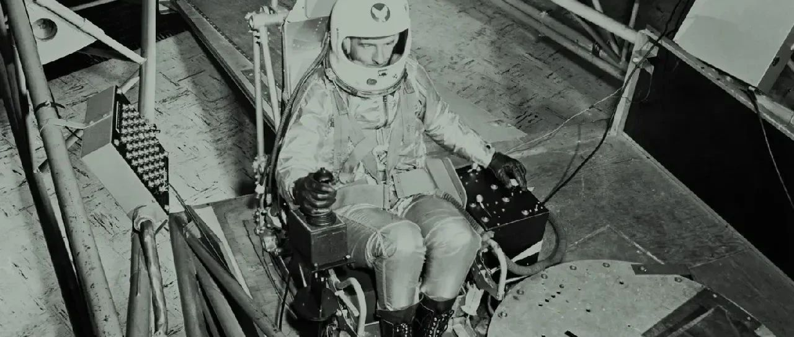

是时候重新想象，哪些人最适合太空旅行
原创
阿点
QueerMouseCave
2024年04月12日 17:14
荷兰
原文摘自WIRED网站，发表于2019年，全文约3670字。
1961年，一位名叫David Myers的大学生从华盛顿前往佛罗里达的美国海军航空医学院参加一项新实验。
Myers
最近通过邮件告诉我：“那时我对自己将要面临的情况了解有限，所以第一天我非常好奇并且有点兴奋。”
Myers
是Ashton Graybiel博士为了测试载人航天的可行性，专门招募的11名人员之一，当时没有人知道人体是否能够承受大气层之外的旅行。近十年来，美国海军对这11名人员进行了无数次测试。其中四名男子在一个不断旋转的20英尺的房间里连续待了12天。在另一项实验中，他们被派往新斯科舍省海岸附近知名的凶险海域。这些人在船上打牌，而研究人员则因晕船而不得不取消测试回家。另一些人则被送去乘坐所谓的“呕吐彗星”，一款模拟零重力的飞行器。这是
Myers
至今最喜欢的测试。“这种自由漂浮是一次令人着迷的经历”，他说， “其它测试都远远比不上我最喜欢的这个。” 但
Myers
和其他人永远不会去太空。事实上，他们永远不会获得允许。他们被招募参加测试的原因正是他们永远无法通过NASA宇航员资格考试：11名男子全都是聋人。
Myers
和他的同事现被称为“加劳德十一人”，是从加劳德学院（现为加劳德大学）招募的，这是一所专为聋人学生开设的学校 （大写Deaf指的是聋人文化和社群，而小写deaf指的是不认同该社群的人）。11名男子中，有10人因脊髓性脑膜炎感染而成为聋人。这种感染最终损害了每个人的内耳，包括前庭系统，而前庭系统恰好也是导致晕动病的主要系统。这使得这些人成为了太空计划的完美测试对象，该计划试图了解人们在内耳无法感知上下的地方会发生什么。“通过他们的耐力和奉献精神，加劳德十一人的工作为理解晕动病和适应太空飞行做出了重大贡献”，美国宇航局历史部的Hannah Hotovy写道。加劳德十一人中的另一位成员Harry Larson说：“我们的与众不同之处正是他们所需要的。”
成为一名宇航员非常困难，这已不是什么秘密。美国宇航局的选拔过程是出了名的严格——严格到这里是电影《千钧一发》最合理的取景地，只有经过完美基因改造的人才能登上飞往太空的火箭。作家Tom Wolfe在他的The Right Stuff一书中记录了太空计划中艰苦的宇航员训练计划。
长期以来，人们一直认为这种训练是必要的——太空旅行是一项令人身心疲惫的苦工，它需要我们当中最强壮、最聪明、适应能力最强的人。
但力量有多种形式，智慧也是。如果你想找到最能适应一个不适合他们的世界的人，那么最容易找到的地方就是，每天都在这样的世界中穿行的残障人士。
这使得残障权益倡导者提出了一个问题：什么才是真正正确的东西？
“残障者的身体是为太空旅行而生的。残障者的思想已经突破了外部极限。”残障可见度项目（Disability Visibility）的创始人Alice Wong去年写道。“我们已经掌握了呼吸器的使用，并且可以应对具有挑战性的情况。” Wong随后与作家兼表演者Sam de Leve共同编写了文学杂志《聋人诗人协会》的其中一期，《太空中的残障者》。
以使用造口袋的人为例。目前，在太空中排便仍是一个重大技术挑战。在起飞、着陆和太空行走时，宇航员都穿着尿布。在空间站中，ta们的厕所需要相当高的精确度和训练才能使用。宇航员们曾讲述过各种关于排便异常、马桶堵塞或出故障的故事。2008年，美国宇航局花费1900万美元为国际空间站添置了一个俄罗斯厕所。对于带有造口袋的宇航员来说，这一切都不是问题。“我可以把插头插到墙上，然后清空收集的容器”，使用回肠造口袋的残障设计专家Mallory K. Nelson说，这是一个与她的肠道相连并收集废物的袋子，“我移动了粪便的排出位置，这为我可以拥有的系统创造了更多的灵活性。我可以将它固定在宇航服上。”
或者考虑在太空中运动。你肯定见过宇航员在空间站周围快速移动的视频，ta们用手臂和腿推动表面并引导运动方向，这是使用轮椅和其它助行器的人们已经很熟悉的运动方式。事实上，残障者比健全人更熟悉在太空中移动身体的各种设备和方式。“我们用多种不同的方式移动身体，残障群体有很多选择，”Nelson说。Nelson是一名截肢者，使用拐杖、轮椅、踏板车和假肢出行，他甚至为此创造了一个术语：
跨移动性（transmobility），即除了将一只脚放在另一只脚前面之外，还有很多方法可以四处活动。
Nelson还指出，大多数宇航员之前都没有依赖科技进行运动和生活的经验，而残障者每天都会这样做。穿着宇航服进行太空行走的宇航员必须接受培训，了解如何与某个设备协调一致地移动身体。ta们必须习惯这样的想法：如果该设备失灵，ta们会面临严重危险。这又是一种像Nelson这样的人每天都会经历的日常。“我总是靠另一个物体来移动我的身体，这就是我们每天要做的”，Nelson说。
或者以盲人宇航员为例。在《科学美国人》的一篇文章中，Sheri Wells-Jensen阐述了为盲人太空旅行者设计宇宙飞船的案例：
“毕竟，在发生严重事故时，最先坏掉的可能就是车灯！这通常意味着，拥有视力的宇航员为了安全必须做的第一件事，就是确保可以看到周围环境。ta需要寻找手电筒，如果紧急照明灯亮起，ta的眼睛需要一段时间来适应。与此同时，盲人宇航员已经开始寻找问题的根源。1997年，俄罗斯和平号空间站发生火灾，烟雾遮住了宇航员的视线。这位失明的宇航员虽然仍受到缺乏良好空气的影响，但不会被灯光昏暗或烟雾遮挡困扰，她能够准确地将灭火器对准热量和噪音的来源。”
在Wells-Jensen提到的和平号火灾中，出现的问题之一是，视力正常的宇航员无法通过烟雾找到灭火器。如果这艘船的布局考虑到了盲人参与者的情况，那么这样的关键设备中就会内置非视觉信号。
或者再次考虑一下聋人宇航员。加劳德十一人之所以被选中是因为他们对晕动病有免疫力——据报道，John Glenn甚至表示很羡慕他们能够承受测试而不生病——但还有其它原因表明，带一名聋人宇航员可能会很有用。“研究表明，
使用手语可以增强视觉工作记忆的认知优势，增强我们在大脑中看待、记忆和操作物体的能力
”，加劳德特大学教授、提出“聋人增益”（Deaf Gain）一词的学者Joseph Murray说道。该理念认为，耳聋不应被视为失去某些东西，而是被视为获得许多其它东西。“聋人增益理念给NASA和所有工作场所带来的挑战是，反思自己对聋人能力的自动假设”，Murray说，“如果任务需要有高级空间处理技能，并且没有晕动病的人，那么有很多聋人准备好并愿意效力。”
残障者可能不仅仅在太空旅行中拥有优势。假设宇航员要去某个地方定居：健全的身体可能不再按照期望的方式行事。“就像所有生物一样，人类在地球上拥有一个生态位，我们以不同的方式利用它”，弗吉尼亚理工大学教授Ashley Shew说。而火星，甚至是空间站，都与那个生态位完全不同。“我们成长环境的差异如此巨大，以至于我们在太空中的存在更像是地球上的残障者，而不是地球上的健全人。“
谁会比那些早已习惯在一个不为ta们所建造的环境中生活的人——那些每天在地球上经历这种情况的人——更适合这项任务呢？残障者在太空中会表现得更好，因为ta们已经学会了与不利局势进行周旋，这是健全人完全不懂的方式
”，Shew说。Wong也表示同意：“我们与不同的身心进行交流、运作和存在的方式，使我们成为理想的太空探险者和地球大使，准备好与有感知的生命进行第一次接触。”
很难说这是否能实现。我邀请NASA对其宇航员选拔政策发表评论，但对方没有回应（与所有政府机构一样，NASA人员目前由于政府停摆而没有上班）。火星一号或SpaceX也没有回应。火星一号的网站上，有一整个页面都是关于火星任务候选者资格，声称“一般来说，将使用正常的医疗和生理健康标准”，并且“任何关节活动范围和功能不正常”的人、任何视力低于20/20的人，以及任何被认为不“健康”的人，都是不合格的。NASA的常见问题解答部分指出，“为了最大限度保证机组人员安全，根据NASA医生的判断，每位机组人员都不能有会损害其参与太空飞行的能力、或因太空飞行而恶化的健康状况。”
要改变这些标准并不容易。航天器在设计时，就对坐在座位上负责操作的人体进行了某些假设。改变这些参数设置的机会很小，必须在设计初期抓住机会，而不是半路上。此外，许多想去太空的残障者无法进入那个输送了众多宇航员的渠道：“宇航员是从军队选拔而来的，这对残障者来说是一扇紧闭的大门”，
Myers
说。“对于那些能力达标的残障者来说，这是需要消除的障碍。” NASA本身没有理由重新考虑他们的立场，因为没有人真正促使他们这样做。就是这么简单。
但这一切都可能改变。2017 年，Johanna Lucht成为第一位在载人研究飞行期间在NASA控制中心发挥积极作用的聋人工程师。南非活动家和人道主义者Eddie Ndopu表示，他想成为第一个进入太空的残障者。他计划预订一趟飞往太空的商业航班，并在太空中向联合国发表讲话（MTV计划全程拍摄记录）。Julia Velasquez是一位来自加利福尼亚州的聋人女性，她完成了宇航员要采取的许多标准步骤——在NASA实习、最近获得了飞行员执照，甚至在夏威夷的模拟火星殖民地生活过。
当我问
Myers
是否曾希望成为一名宇航员，他说：“是的，非常希望。我之前告诉过Dr. Graybiel，‘如果你要开展涉及太空飞行的实验，我想第一个参加。’”迈尔斯很可能在有生之年都无法进入太空，但他可能会看到另一名残障者踏上旅程，为一批全新的、具有独特资质的宇航员开辟太空空间。
作者简介：
Rose Eveleth是一位美国播客主持人、制作人、设计师和动画师。ta还是“Flash Forward”的主持人和制作人，这是一个关于未来可能（和不太可能）场景的播客，涵盖了从假风滚草农场到价值百万的水晶抢劫案等各种内容。
阅读原文